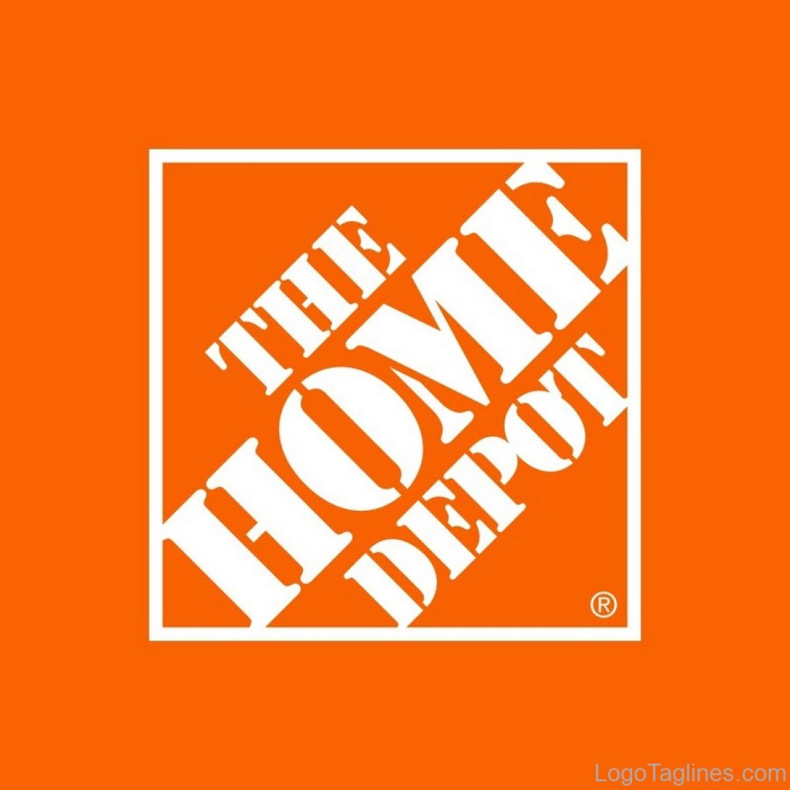

Ably
Apache Cassandra is trusted to scale at internet level and designed to scale without limits. Which is why, at Ably Realtime, we use Cassandra for our persistent storage of messages.
Apache Cassandra is trusted to scale at internet level and designed to scale without limits. Which is why, at Ably Realtime, we use Cassandra for our persistent storage of messages.
Activision built a new system to message players with highly personalised communication. It used large amounts of real-time data and was built with Apache Cassandra
AdStage is constantly monitoring performance trends and optimizing campaigns on behalf of advertisers. Apache Cassandra delivered the operational speed the company needed to ensure that the platform has low latency and the required throughput.
Where we originally stored device data in a set of Postgres shards, our scale quickly outpaced our capacity to add new shards, so we moved to a multiple database architecture using HBase and Cassandra.
A year ago, Apple said that it was running over 75,000 Cassandra nodes, storing more than 10 petabytes of data. At least one cluster was over 1,000 nodes, and Apple regularly gets millions of operations per second (reads/writes) with Cassandra.
We needed something that would handle really high write throughput and keep scaling on the write throughput. That forced us to look at distributed stores, and Apache Cassandra was the option that fitted what we needed.
EmoDB is an open source RESTful data store built on top of Cassandra that stores JSON documents and, most notably, offers a databus that allows subscribers to watch for changes to those documents in real time.

Best Buy uses Apache Cassandra to manage massive spikes in holiday traffic — 7x traffic spikes and bursts > 50,000 rps — and calls it “flawless.”
In vetting MySQL, MongoDB, and other potential databases for IoT scale, Bigmate found they couldn’t match the scalability they could get with open source Apache Cassandra, which allows them to handle millions of operations or concurrent users each second.
BlackBerry deployed Apache Cassandra as the NoSQL database solution for its Internet of Things (IoT) platform. The BlackBerry IoT platform powers the BlackBerry Radar IoT solution designed to provide continuous visibility into an organization’s transportation fleet.
At BlackRock, we use Apache Cassandra in a variety of ways to help power our Aladdin investment management platform. In this talk I will give an overview of our use of Cassandra, with an emphasis on how we manage multi-tenancy in our Cassandra infrastructure.
Bloomberg Engineering is working on a multi-year build, creating a new Index Construction Platform to handle the daily production of the Bloomberg Barclays fixed income indices, using Apache Cassandra and Apache Solr.
The IT system department needed a new solution for real-time monitoring of applications and business processes, and to be able to quickly counteract any negative influences. They selected Apache Cassandra because it could be tailored to their needs.

Campaign Monitor knew that shifting to a new database technology was a major undertaking. They chose Apache Cassandra as their strategic operational database platform due to its exceptional reliability, manageability at scale and open source community.
P-BEAST consists of 20,000 applications running on 2,400 interconnected computers. CERN uses Apache Cassandra to satisfy the large time series data rates, flexibility and scalability requirements entailed by the project.
Clear Capital is a leader in property valuation solutions for North America. Cassandra provides the foundation of the Clear Capital technology platform.
Cloudkick uses Apache Cassandra for configuration data as well as metrics storage, a key element in keeping up with metrics processing as well as providing a high quality user experience with fast loading graphs.
The Open-Mesh team knew that Apache Cassandra was ideal for their intended capability. The solution had the scalability and data storage requirements to meet the needs of the CloudTrax platform.
Constant Contact uses Cassandra to manage social media data for over 400k small business customers. Its largest production cluster has over 100 TB of data in over 150 machines.
The oil & gas industry stores sensor data in an industry-specific document database, where data access is only available through a proprietary API based on SOAP and XML. DataCloud solved this by transferring this data into an Apache Cassandra database cluster

Cassandra was the only database that fulfilled all of Discord’s requirements, as they can add nodes to scale it and it can tolerate a loss of nodes without any impact on the application. Related data is stored contiguously on disk providing minimum seeks and easy distribution around the cluster.
The company started its operations in 2008 and started offering single match fantasy sports in 2012. It is India’s Biggest Sports Gaming platform with users playing Fantasy Cricket, Football, Kabaddi, Basketball & Hockey. Dream11 is the Official Fantasy partner of the VIVO Indian Premier League (IPL), International Council of Cricket (ICC)

A glimpse on our Cassandra deployment: Dozens of nodes across multiple clusters 200 TB+ storage provisioned 400M+ writes & 100M+ reads per day, and growing QA, LnP, and multiple Production clusters.
Equinix uses Cassandra for its ease of operation, and always-on node architecture — and its peer-to-peer architecture guarantees no single point of failure to collect and store streaming data from infrastructure instruments.
Flant has been successfully using the Rook operator to operate its Cassandra cluster in Kubernetes and provides tips on how it changed some parameters in the Cassandra config.
Fractal’s APIs aggregates data, and analyses permission-based banking, accounting and payments data so that financial institutions can provide timely nudges and insights to help their small business clients with funding and to better understand their finances.
Grubhub runs a service oriented platform that primarily operates out of multiple AWS data centers (regions). It moved to cloud infrastructure to accelerate its growth, using Apache Cassandra as its primary persistent data store.

Home Depot also used DataStax and Apache Cassandra to stand up curbside apps quickly. Siddiqui said Home Depot is a big open source shop.
This is probably going to be the most engineering non-answer ever, which is simply that I haven’t really had to care about Cassandra since we made the changes and upgrades. Usually if I was getting paged in the middle of the night, it probably had something to do with a brief Cassandra blip that was causing an increased response time. That has just gone away completely.
Hulu selected the Apache Cassandra system when its previous system was having trouble expanding to its growing subscriber base. “We needed something that could scale quickly and would be easy to maintain because we have a very small team.”

IBM determined that the Apache Cassandra NoSQL database would be the platform architecture’s key technology to deliver the requirements of scalability, performance and high availability.
At Instaclustr we also have a big data challenge that we are solving with Apache Cassandra and Apache Spark. Instametrics provides us with the perfect opportunity to dogfood the Instaclustr technology stack.

“Cassandra works well; it runs really nicely and smoothly. We’ve never lost data, and things are easy to fix. Quite frankly, without Cassandra, we couldn’t run Instana.”

Constant At Instagram, we have one of the world’s largest deployments of the Apache Cassandra database. We began using Cassandra in 2012 to replace Redis and support product use cases like fraud detection, Feed, and the Direct inbox.
Mint Bills selected Apache Cassandra to store user account data. “When you are selecting between accounts on your Mint Bills app, you are actually retrieving information from Cassandra directly,” Csasznik-Shaked added
Intuit is supporting over 42,000 Peak TPS in production in AWS, over eight clusters in production. Cassandra has to process massive amounts of data, such as entitlements, tax returns, filings, user experience, and everything needed to support TurboTax.
Keen leverages Kafka, Apache Cassandra NoSQL database and the Apache Spark analytics engine, adding a RESTful API and a number of SDKs for different languages. It enriches streaming data with relevant metadata and enables customers to stream enriched data to Amazon S3 or any other data store.
“Once it’s set up and running it’s hands-off. Quite frankly, it’s easy from an operations perspective. So our customers, they’re using Cassandra, but they don’t really realize it. But they do say, ‘it’s always up. It’s always fast.’ It’s all these benefits that you really want the end-user to know about.”
"We hear our customers say all the time that there is no platform that can take all that data as well as Apache Cassandra. If you’re generating tons of data, you need global resiliency; you are going to pick Cassandra. When you need to scale, it does that."
Locstat showed a Geotrellis generated heat map with flight data from aircraft and flight patterns around the Cape Town International Airport. Data is stored in Cassandra and then pushed through Apache Spark and visualized using Geotrellis in a Cesium spatial interface.
Cassandra provides a smart data storage layer that is fed with information from back-end systems within Macquarie through an open API platform and then serves customer requests with great speed, due largely to its in-memory capabilities.
Growth in business led us to want 10x growth in data, move from a read-mostly model to one which could handle near-real-time updates, and a move into multiple data centers. POC Result: Cassandra & ActiveSpaces - Very close. MongoDB - Failed tests. YMMV!
Maths Pathway is a Learning and Teaching Model that supports students along an individual pathway to build a deep appreciation and knowledge of mathematics. Maths Pathway delivers that individual and personalized learning with the help of Apache Cassandra.
METRO wanted to consolidate development and top management believed Apache Cassandra would be a good starting point. The entire platform has been migrated and teams are beginning to use native services from Google Cloud to interact with Cassandra effectively.
“We wanted to implement a distributed database that would fit with our microservices-based application strategy and that would be able to handle the availability and scalability needs of the applications too,” Jakobsen said. “Cassandra matched this model perfectly…”
Monzo employs a microservice architecture (on Go and Kubernetes) and profiled and optimized key platform components such as Apache Cassandra and Linkerd for a recent crowdfunding effort run entirely through its app.

Netflix manages petabytes of data in Apache Cassandra which must be reliably accessible to users in mere milliseconds. They built sophisticated control planes that turn their persistence layer based on Apache Cassandra into a truly self-driving system.

The New York times uses Apache Cassandra with Python for the company’s ⨍aбrik messaging platform.
NHN Techorus provides IT infrastructure and managed services through the company’s Data Hotel division. The team has identified that there are a rapidly growing number of customers looking to deploy applications and solutions using Apache Cassandra as their data store.
Ooyala built a real-time analytics engine using Cassandra. Evan Chan (Software Engineer at Ooyala), describes his experience using the Spark and Shark frameworks for running real-time queries on top of Cassandra data.
Outbrain has 30 production clusters of Apache Cassandra of different sizes, ranging from small ones to clusters with 100 nodes across 3 datacenters. Cassandra has proven to be a very reliable choice as a datastore which employs an eventual consistency model.
Paidy offers real-time monthly consolidated credit services across Japan. The company identified Apache Cassandra as the most suitable database technology for its event sourcing and reactive architecture.
Penn Mutual stores their data information in a 6-node Cassandra ring. Now, they’re able to leverage data to innovate and make more informed decisions so they can provide a truly personalized and premium experience to their customers.
“With the advent of the Internet of Things, the need to keep track of the growing number of touch points of a network is becoming increasingly challenging. Fortunately, Stevens and his team had some previous experience with Apache Cassandra…”
PubNub offers realtime infrastructure-as-a-service, and provides enterprise-grade security, 99.999% SLA-backed reliability, and global scalability to support the largest realtime deployments, all via simple APIs and 70+ SDKs.
RevTrax chose Cassandra for its uptime and linear scale: “If we need to scale out, it’s easier to scale the reads and writes with Cassandra than it is with MySQL.” But most of all, it was chosen for its durability and no single point of failure.
Sky uses Cassandra for database persistence in its Online Video Platform - the system which delivers all OTT video content to both Sky and NOW TV customers - including handling huge spikes in traffic for popular sports games and TV shows.

We’ve overall been very satisfied with Cassandra as a solution for all our personalization needs and are confident to scale it up to serve personalized experience to our ever growing size of engaged user base.
“At the operational level, being on Cassandra, with an infrastructure in containers and microservices, based on Docker, allows services to be resized dynamically,” explains Jérôme Reboul.

Apache Cassandra has been used for many years at Target - since around 2014. Here, they discuss how they learned to deploy Cassandra as a Docker container in Kubernetes, while still maintaining stability and consistency — reliably in every location on their map.

Uber has been running an open-source Apache Cassandra® database as a service that powers a variety of mission-critical OLTP workloads for more than six years now at Uber scale, with millions of queries per second and petabytes of data.
We had good experience with Cassandra in past, hence, it was the first choice. Apache Cassandra has best write and read performance. Like Kafka it is distributed, highly scalable and fault-tolerant.
The Ocean Observatories Initiative (OOI) is a science-driven ocean observing network that delivers real-time data from more than 800 instruments to address critical science questions regarding the world’s oceans. Apache Cassandra has served as the heart of this system, which lives on hybrid infrastructure.
Yelp is transitioning from the management of Cassandra clusters in EC2 to orchestrating the same clusters in production on Kubernetes. Here, they discuss the EC2-based deployment and how they are using the Cassandra operator and etcd for cross-region coordination.
© 2009- The Apache Software Foundation under the terms of the Apache License 2.0. Apache, the Apache feather logo, Apache Cassandra, Cassandra, and the Cassandra logo, are either registered trademarks or trademarks of The Apache Software Foundation.